Back to Homepage
In this assignment I implemented the code to rasterize triangles and render SVG images. I also enabled additional features/functionalities such as supersampling, transformations, color interpolation, and sampling for texture mapping. Supersampling rendered the edges smoother along the rasterized triangles. I learned about barycentric coordinates and used them to interpolate color in the rasterizations. Lastly, I utilized mipmaps to implement different pixel and texture sampling methods which made anti-aliasing more efficient than supersampling.
In this task, I enabled drawing triangles by implementing the rasterize_triangle() function.
Triangle rasterization happens in the following steps:
(x + 0.5, y + 0.5) ,
is within the bounds of the triangle.
I did this by implementing a helper method that uses barycentric coordinates to determine if a point is within a triangle.
I only sampled within the bounding box, which proves that my algorithm is no worse than one that checks each sample within
the bounding box of the triangle.
fill_pixel() function.
basic/test4.svg are shown below.
basic/test4.svg from Task 1. |
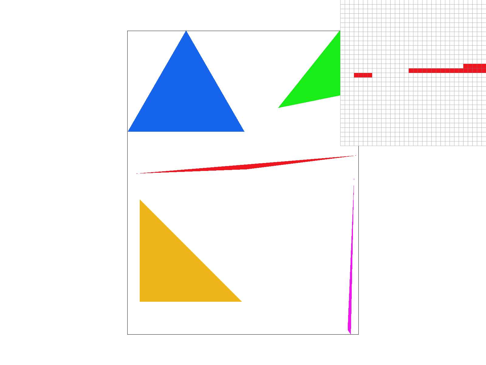
basic/test4.svg with the pixel inspector highlighting the tip of the red triangle.
Note there are jaggies from aliasing.
|
In this task, I antialiased using supersampling. For each pixel, I took sample_rate
(a number - either 1, 4, 9, or 16) samples within the pixel and averaged those colors to
get the new color for the pixel. I expected this would make the pixels seem more blurred up close, but looking at
the supersampled rasterized image displayed cleared images without any jaggies.
I implemented supersampling through the following steps:
set_sample_rate() and set_framebuffer_target() functions, I resized
the sample_buffer from \(\text{width}*\text{height}\) to
\(\text{width}*\text{height}*\text{sample_rate}\) so it could contain all the sampling points
depending on the sample_rate. It is helpful to resize whenever the sampling rate is changed
so that the program only uses as much memory as it needs in sample_buffer.
sample_buffer.
resolve_to_framebuffer() method, I summed to color values of all the
subpixels and divided by the sample_rate to get the average color for that pixel. I assigned the pixels' corresponding
color in the rgb_framebuffer_target to display the image.
A problem I ran into was that the black frame rectangle for all images started to lighten as I increased the sample_rate.
This was because fill_pixel() only set the color for one pixel in sample_buffer and it averaged out with the
neighboring white pixels and lightened. I fixed this problem by supersampling the edges of the frames as well by using a nested for loop
to update sample_buffer in fill_pixel() similar to how I implemented it in rasterize_triangle().
This ensured that the black frame stayed the same color as I modified sample_rate.
This supersampling algorithm antialiased the rasterized triangles.
basic/test4.svg images are shown below when sample_rate is 1, 4, and 16.
basic/test4.svg when sample_rate = 1. |
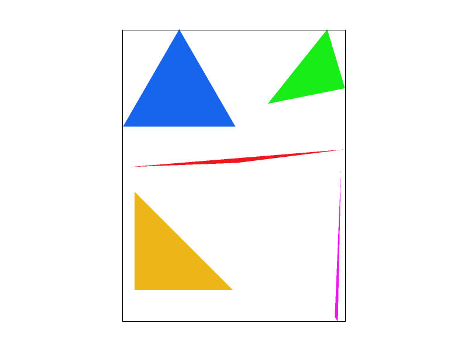
basic/test4.svg when sample_rate = 4. |
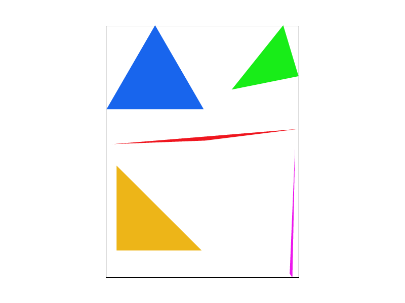
basic/test4.svg when sample_rate = 16. |
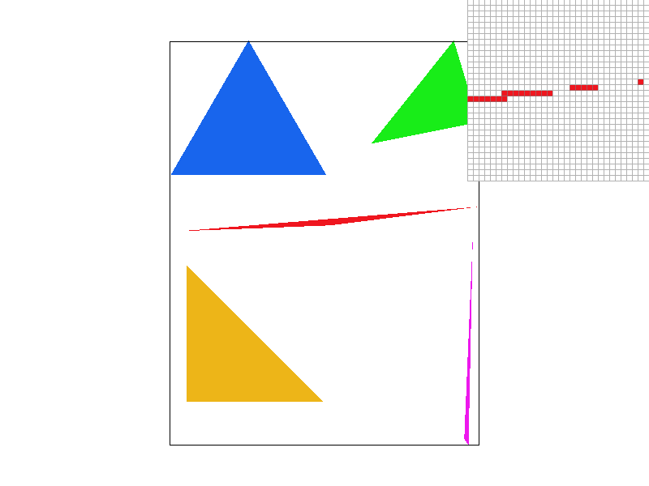
basic/test4.svg when sample_rate = 1. Pixel inspector shows the jagged tip of the thin triangle.
|
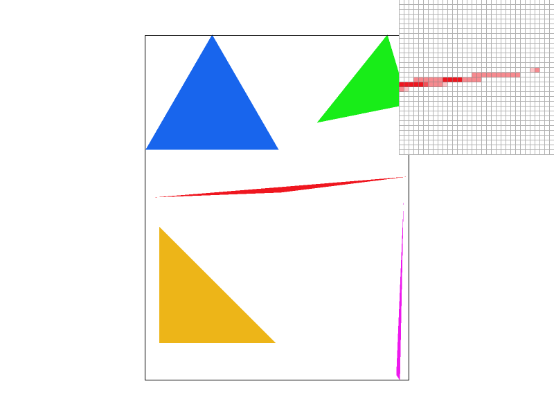
basic/test4.svg when sample_rate = 4. Pixel inspector shows the tip of the thin triangle is becoming antialiased.
|
basic/test4.svg when sample_rate = 16. Pixel inspector shows the tip of the thin triangle is
a little connected.
|
As I increased the sampling rate the edges and vertices become more smooth and the pixels are connected, therefore removing the jaggies. This higher resolution is observed because averaging the color of the pixel from its subpixels takes into account there being more than one triangle in a pixel, and it blends in the colors to eliminate the jaggies.
In my_robot.svg, (Figure my_robot.svg), I modified cubeman's arms and legs so it looks like it is in the middle of doing a jumping jack. I also changed its color from red to dark blue. Both parts of both legs are scaled by lengthening them from 0.6 to 0.8, and are rotated 45 degrees outward. Both arms are rotated 45 degrees upwards. And finally, there were some minor translations done to bring the arms and legs closer to the torso.
|
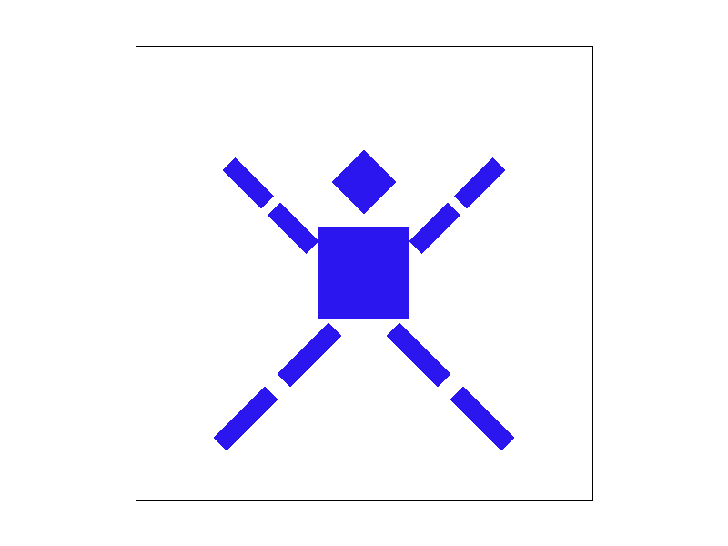
|
Barycentric coordinates are geometric coordinates that describe a point in relation to a triangle. They be seen as weights of the three vertices of a traingle, and determine the point's position. These coordinates are often denoted by alpha, beta, and gamma, and the three are constrained to sum to 1. In Figure Rasterized Triangle below, for example, let's have alpha correspond to the red corner, beta to the blue corner, and gamma to the green corner. If alpha is 1, and beta and gamma are both 0, then the point will be weighed entirely to the red corner according to the system of equations for a point inside the triangle (x, y) and set of vertices {(x_0, y_0), (x_1, y_1), (x_2, y_2)}, where x = alpha*x_0 + beta*x_1 + gamma*x_2 and y = alpha*y_0 + beta*y_1 + gamma*y_2. However, if alpha = beta = gamma, then for this example, (x, y) would be directly in the center of the triangle.
|
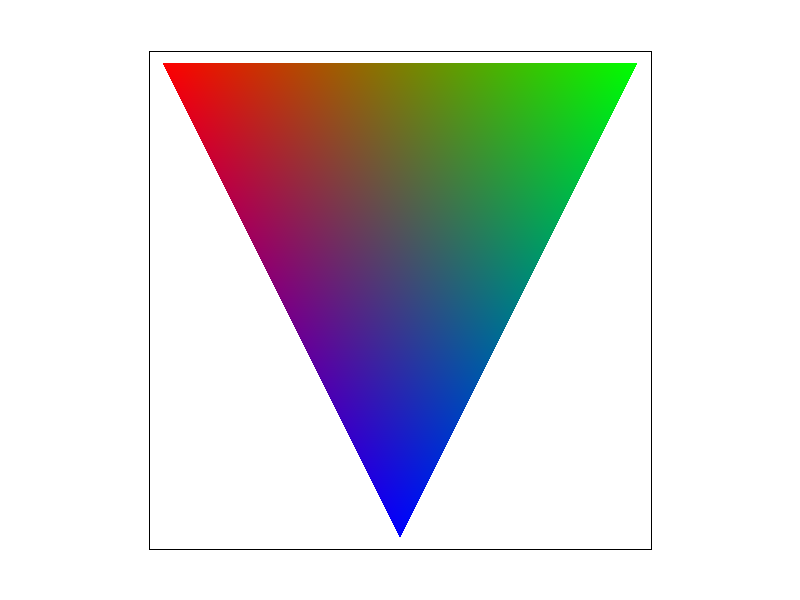
|
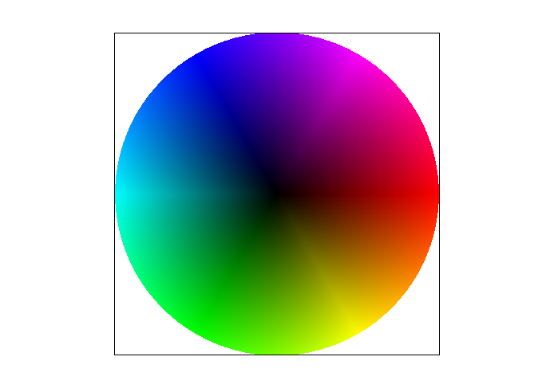
|
Pixel sampling is the process of determining the color of a pixel for an image by looking up a corresponding color value in a texture map. Additionally, texture mapping allows applying a texture to a 3D object. Using barycentric coordinates as discussed in Task 4, each point of a textured triangle can be mapped to uv coordinates on the textured image.
The two types of pixel sampling I implemented are nearest neighbor and bilinear:
Nearest neighbor sampling selects the color of the nearest pixel in the texture map to the pixel being rendered. Bilinear interpolation, on the other hand, calculates the color of a pixel based on the weighted sum of the four nearest pixels in the texture map.
texmap/test1.svg when sample_rate = 1 and nearest neighbor sampling. |
basic/test1.svg when sample_rate = 1 and bilinear sampling. |
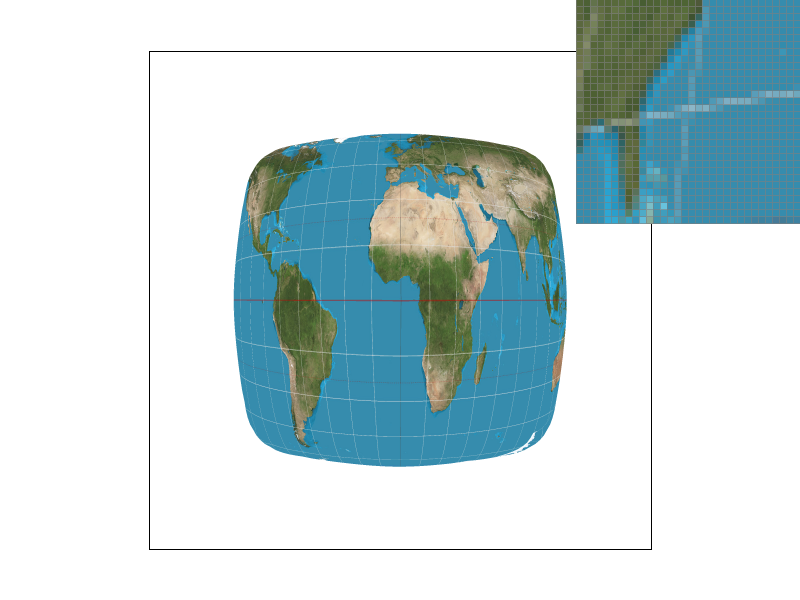
texmap/test1.svg when sample_rate = 16 and nearest neighbor sampling.
|
texmap/test1.svg when sample_rate = 16 and bilinear sampling.
|
texmap/test1.svg demonstrates that bilinear sampling outperforms nearest neighbor sampling. Comparing the two for when
the sample_rate = 1, the lines for longitude and latitude appear to be smoother with bilinear sampling. Although setting
the sample_rate = 16 drastically improves the smoothness for both sampling methods, bilinear sampling still
antialiases the lines better than nearest neighbor sampling by removing most of the jaggies. In comparison, the nearest
neighbor sampling rasterizes sharper images than the bilinear sampling, which makes images more blurred in an attempt to
antialias by filtering high frequencies.
It can be noted that even though nearest neighbor sampling is fast and simple, however it can result in aliased artifacts when the texture is magnified, as shown above. Bilinear sampling renders smoother and accurately, but is expensive in terms of compute relative to nearest neighbor sampling and does not produce as sharp of an image. There will be a large difference between the two methods depending on the magnification of the texture: nearest neighbor sampling can result in jaggies when magnified and loss of detail (texels) when minified, but it is simpler. Bilinear sampling will produce a better and smoother result but is more expensive.
Level sampling is a technique to improve the rendering of textures on 3D models by mapping textures of 2D images onto the surfaces of 3D models to give them more detail. The texture is stored and sampling is reduced. Then the level of the mipmap is selected based on the level with the closest sampling rate.
I implemented level sampling for texture mapping by first determining p_uv, p_dx_uv, and p_dy_uv
as barycentric coordinates and setting them in the SampleParams struct. Then, I calculated the appropriate mipmap level using
the barycentric coordinates. I subtracted p_uv from both p_dx_uv and p_dy_uv, and then
scaled the results (2 2D Vectors) by another vector containing the width and height of the screen. I took the max norm of these
2 new vectors, and then log2(max norm) to calculate the level, clamping the result between 0 and the mipmap's max level.
If the input level sampling method (LSM) is L_ZERO, then I call the corresponding pixel sampling method (PSM, which I discussed
in Task 5 above) with level 0. If the LSM is L_NEAREST, then I call the PSM with the level I calculated above. However, if the
LSM is L_BILINEAR, then I want to get a weighted averaged of calling the corresponding PSM with the calculated level rounded down
(floored) and rounded up (ceiled). The weights are determined by getting the difference of the calculated level and the floored/ceiled level.
In terms of speed, supersampling is the slowest since it requires sampling multiple points per pixel. Relative to supersampling, pixel sampling is faster since it requires just three lerps to weight against sampling from four pixels. Level sampling is the fastest of the three since at most it requires just one lerp to weight against sampling from two mipmap levels.
For memory usage, supersampling requires the most memory because we store all our samples and supersamples in a sample_buffer
that is sample_ratex larger than the normal rasterization buffer. Level sampling is better in terms of memory since
mipmaps and their levels need to be stored somehow. Althought pixel sampling may require more lerps, there is no need for additional mipmap
storage since it is sampled with mipmap level 0. Therefore, pixel sampling has the most optimal memory usage.
When it comes to antialiasing power, level sampling does not do as good of a job compared to the other two methods most likely because it
is efficient and simple in compute, only taking one lerp and sampling two mipmap levels max. Pixel sampling is better at a higher
sample_rate, because this allows more blur along the pixel boundaries. Supersampling has the strongest antialiasing power,
especially for edges, simply because it requires the most memory and sampling as the sample_rate increases!
Below we compare L_ZERO and L_NEAREST level sampling as well as P_NEAREST and P_LINEAR pixel sampling:
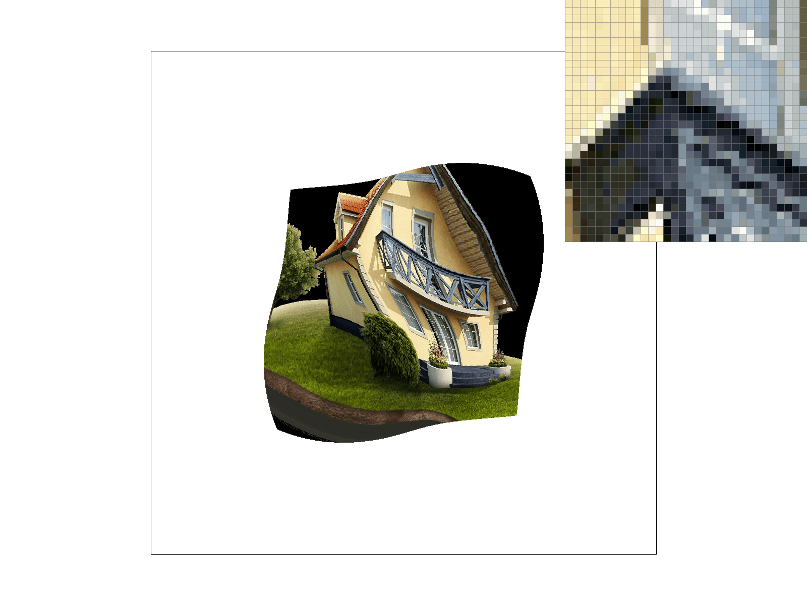
house.svg - L_ZERO sample with P_NEAREST pixel sampling. |
house.svg - L_ZERO sample with P_LINEAR pixel sampling. |
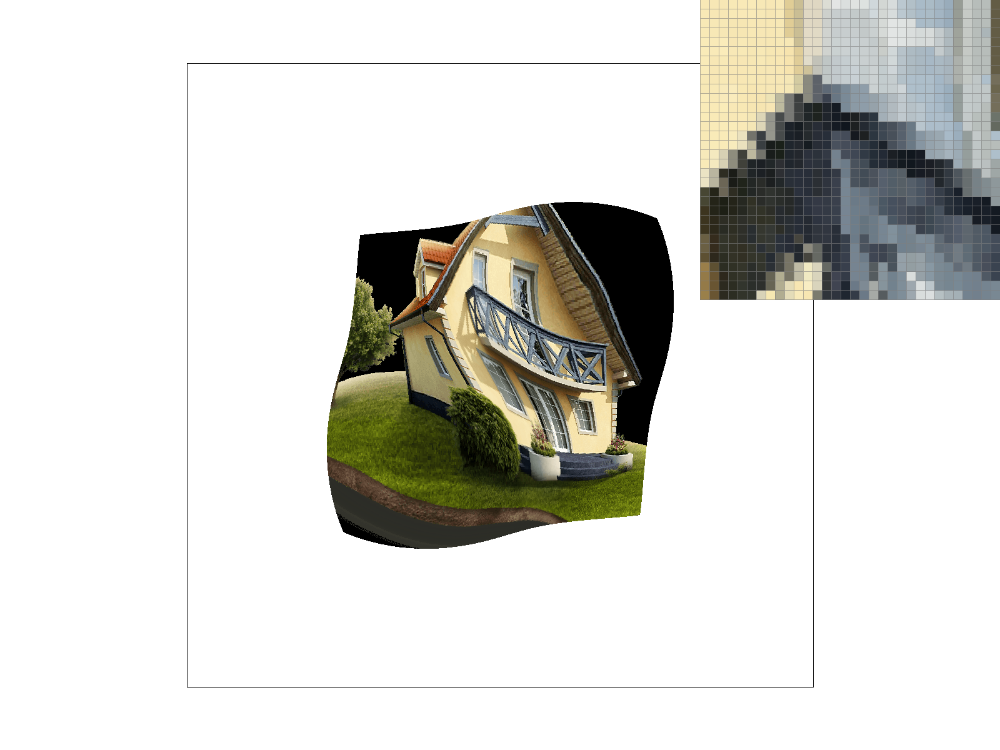
house.svg - L_NEAREST sample with P_NEAREST pixel sampling.
|
house.svg - L_NEAREST sample with P_LINEAR pixel sampling.
|
Above, it can be seen that L_NEAREST's use of another mipmap level helps antialias the pixels along the edges of triangles. Additionally, P_LINEAR significantly helps blur and antialias the image even stronger, and also interpolates the textured pixels in the image.